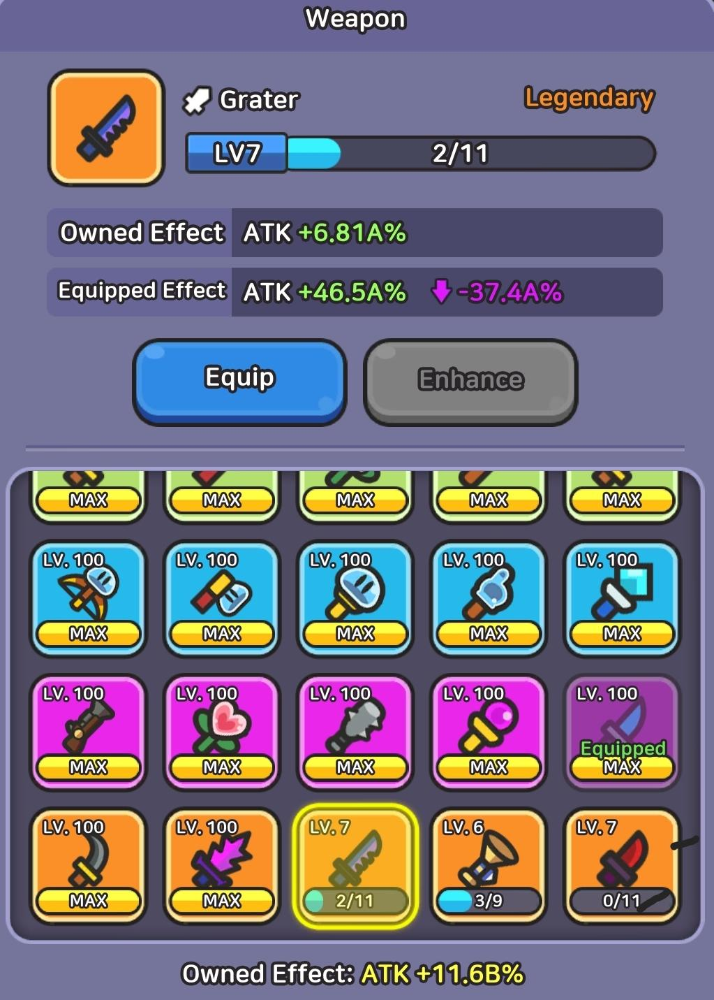
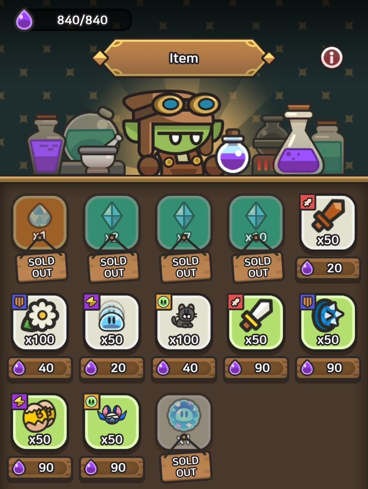
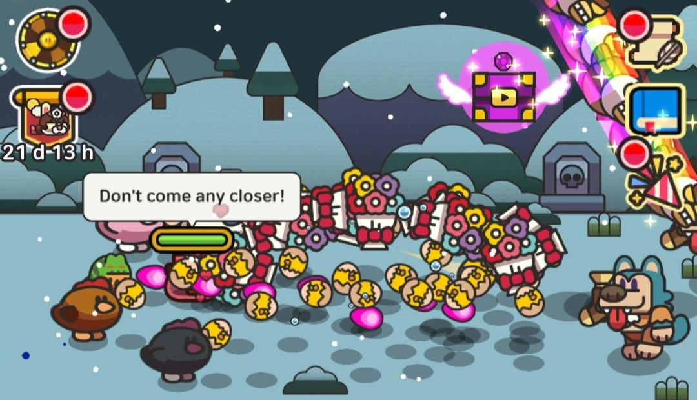
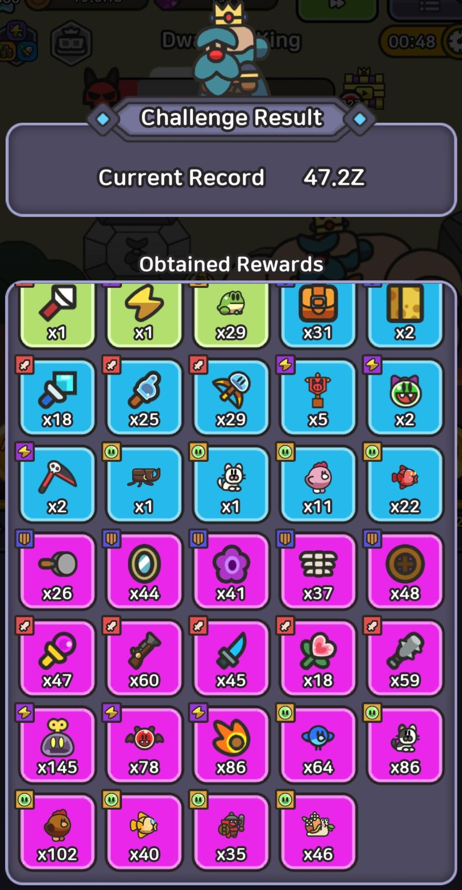

Trivia
This page features random trivia about Legend of Slime: Idle RPG that could be helpful (or not).
Random fact 1
Did you know that Advanced Attack is a multiplier to your Attack stat?
Random fact 2
Did you know that lower rarity Companions, Skills, Gear, Earrings and Talismen could be better than higher rarity ones if the level is high enough?
Random fact 3
Did you know that the amount of Elixer you can hold increases based on how many slimes you own?
Random fact 4
Did you know that you can re-roll the flying chest? You can do this by entering and leaving a dungeon.
Random fact 5
Did you know that the Dwarven King never drop Gear, Companions and/or Spells higher than Epic rarity?
